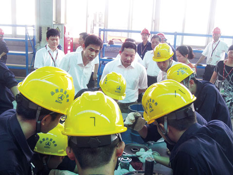

2012-07-17
三一加强员工培训 实现内生增长 增强企业发展体质
培训对社会而言，是国家的竞争力；对企业而言，是最有价值的投资；对员工而言，是最大的福利。长期以来，在“帮助员工成功”的核心经营理念下，三一就通过一些制度，引导员工接受必要的训练，以适应公司高速发展对人才的要求，并为此投入了大量人力、物力和财力。在当前形势下，三一更是认识到要充分利用市场调整的机会，通过系统地开展培训，解决公司亟待提升的员工技能、特别是知识型员工专业技术和素质问题。目前，各事业部正逐渐加大了员工的培训投入，通过更加细致和科学的课程设计，实实在在想方设法，提升员工能力，增强公司体质。
焦点新闻
三一加强员工培训 实现内生增长 增强企业发展体质
近几年，在“帮助员工成功”理念的指引下，三一围绕提升员工素质、提高员工工作效率，想尽了办法。当下，面对工程机械市场变化，三一更是苦练内功，加强了对员工的培训，希望实现内生增长，为公司长远发展打造
系列报道
- 2012-07-17三一加强员工培训 实现内生增长 增强企业发展体质
- 2012-07-17进入世界500强不是在办公室里“坐”出来的
- 2012-07-17三一特色培训体系一览
相关图片
- 